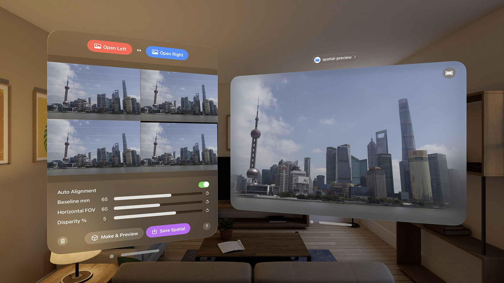

Count hairs in 3D with ANY CAM.
View more in App StorePlease contact jack9ye@163.com
Your privacy is of utmost importance to us. Your data belongs to you, and we will only use it according to the policies outlined below.
Photo Access: Spatial Photo Maker requires access to your photo library to select two photos for generating a spatial photo. This access is only granted after your explicit permission, and the app will not read or access any other photos.
Photo Storage: After generating the spatial photo, the app will save the result to your photo library. This operation will only occur after you grant write permission, and the app will not write any other data without your consent.
Spatial Photo Maker does not transmit any information outside your device. All data remains local and is used solely within the app.
If you have any questions regarding of your data, please contact support.